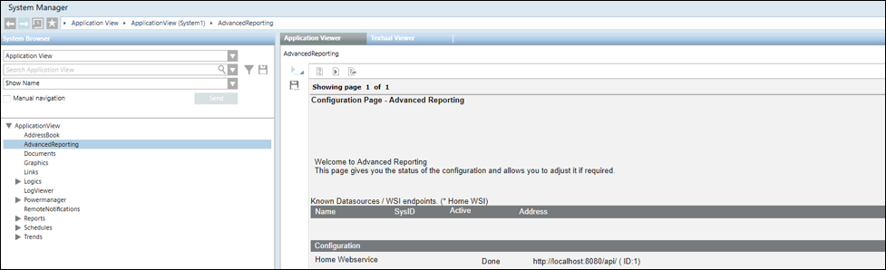
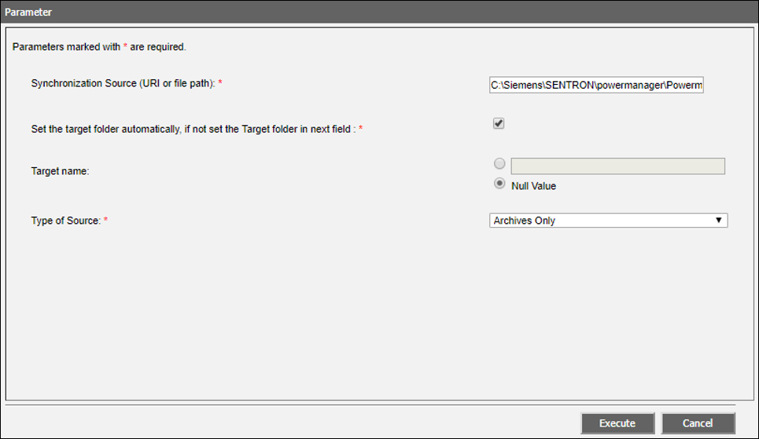

Configure the Advanced Reporting Main URL and WSI URL for Powermanager
- You have created Advanced Reporting web application and copied URL.
- To configure the Advanced Reporting Main URL for Powermanager do the following:
a. In System Browser, select Application View.
b. Select Applications > Advanced Reporting.
c. In the Extended Operation tab, in the Main URL Value text box, paste the copied https URL and click Set. - The Main URL is configured for Advanced Reporting.
- To configure the URL for Web Services, do the following:
a. In the Configuration Page - Advanced Reporting, click Details adjacent to the Template Synchronization.
b. Click Delete, and thereafter click Add.
c. In the Parameter dialog box for Web Services configuration that displays, paste the WSI URL. For example, URL: http://localhost:8080/api/.
NOTE: If IIS, Advanced Report (that is Tomcat server + gms-birt) and WSI are on the same machine then the default URL http://localhost:<WSIPort>/api can be used.
d. Click Execute. - The Web Services URL displays with the status
Done. 
- To perform the templates synchronization for Advanced Reporting, do the following:
a. In the Configuration Page - Advanced Reporting, click Details adjacent to Template Synchronization.
b. In the section now visible above, click Add.
c. The Parameter dialog box for template synchronization displays.
d. In the Synchronization Source (URL or file path) field, enter the path to the libraries folder of your project. For example, [Installation Drive]:\[Installation Path:]\[Project Name]\libraries.
e. Ensure the Set the target folder automatically, if not set the Target folder in next field check box is selected to automatically set the ID of the system as the name of the folder where the advanced reporting templates will be extracted on the Tomcat server.
Alternatively, to manually enter the System ID, deselect the check box and then select the option button next to Target name and type the System ID.
f. In the Type of Source drop–down list, retain the default Archives Only.
g. Click Execute.
h. Click Synchronize. - The Advanced Reporting templates are synchronized.
